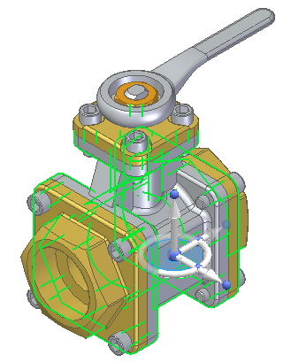
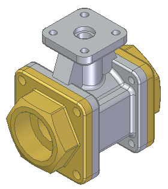

Isolate parts
-
Open an assembly document.
-
Select the parts that you want to only display (isolate).

-
Right-click, and from the shortcut menu, choose the Isolate command.

-
In the graphic window, click the Restore button (1) to return to the pre-isolate view or click the Dismiss button (2) to keep the isolated view.

How do I
Find a part in an assemblyDefine a zone in an assembly
Display or hide all reference elements in an assembly
Display or hide specific reference elements in an assembly
Learn more
Managing components in assembliesDisplaying parts in assemblies
Look up more details
Select Tools pageQuery Dialog Box (Assembly)
Query Scope Dialog Box